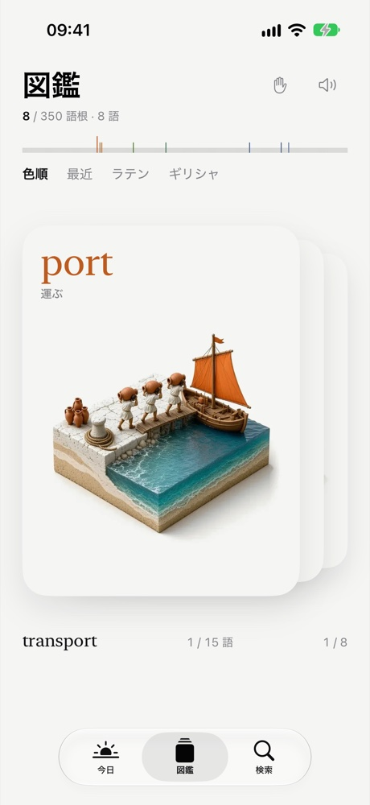

英単語の語源図鑑
語根ひとつひとつに、物語のあるミニチュアを。
知っている単語から、知らなかったつながりを見つける。見つけた語根は、小さな物語といっしょに自分だけの図鑑へ。


発見がふえるたび、図鑑が育つ。
毎日ひとつの語根に出会い、ミニチュアを眺め、その語根を持つ単語をたどる。Rhizaでは、見つけた語根を自分の図鑑に集められます。ラテン語とギリシャ語の語根350点すべてに、由来を描いたミニチュアがあります。
英単語4,900語以上。日本語対応。アカウント不要、広告なし。オフラインで使える買い切りのiPhoneアプリです。
App Storeで見る